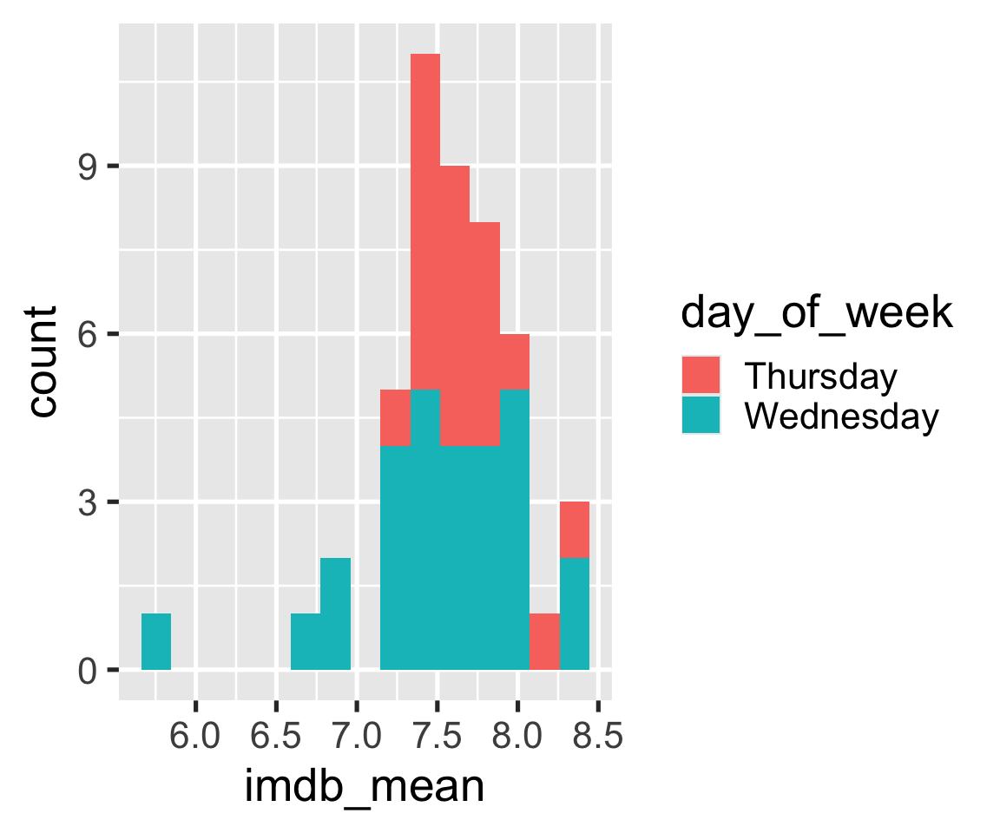
Plot design
Day 04
Prof Amanda Luby
Carleton College
Stat 220 - Winter 2025
Today
ggplot2review- customizations in
ggplot2 - Some guidelines for plot design
What we know:
- A basic set of geometries
geom_point()geom_histogram()geom_boxplot()geom_violin()geom_bar()
- How to map variables to aesthetics
xandyaxiscolorshapealphasize
- How to change axis labels and titles
labs()
What next?
- Setting aesthetics
- Using facets
- Changing scales
- Changing coordinates
- Changing themes
- Adding annotations
Warm Up
- Log into maize
- If you have to type your PAT in everytime you push to GitHub, follow the directions at Getting Set up with Git and GitHub #4 to tell RStudio to save your credentials
- Find the
.rmdtemplate for today at the course website - Choose your favorite way to open it up in maize/Rstudio
- Work with a neighbor to recreate this graph –> (use 15 bins)
08:00
Polishing plots
We’re not quite satisfied….
- I want the bars to have a border that stands out
- Let’s try a facetted graph
- I don’t like the default color scheme
- I don’t like the gray background
Setting aesthetics
Setting = choosing a certain value for an aesthetic
Facets
Changing scales
Examples:
scale_fill_manual()scale_fill_brewer()scale_color_viridis()scale_shape_manual()
Recommended reading:
Example (built-in scale)
Example (built-in scale)
Example (built-in scale)
Example (manual color palette)
Let’s make Wednesdays navyblue and Thursdays gold2
Can also change non-color scales
Can also change non-color scales
Can also change non-color scales
Changing Themes
Theme: The non-data ink on your plots
- background
- tick marks
- grid lines
- font
- legend position
- legend appearance
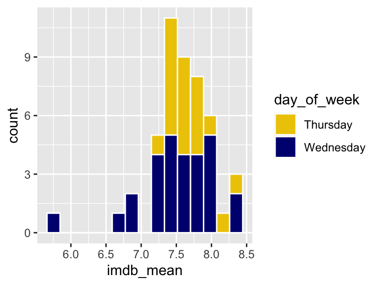
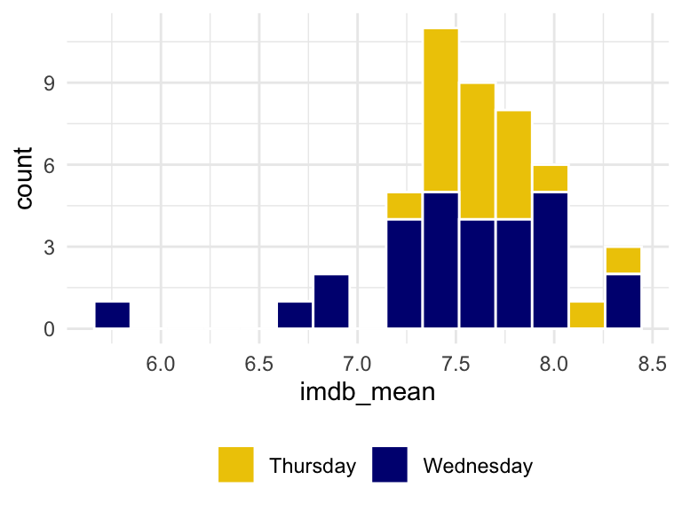
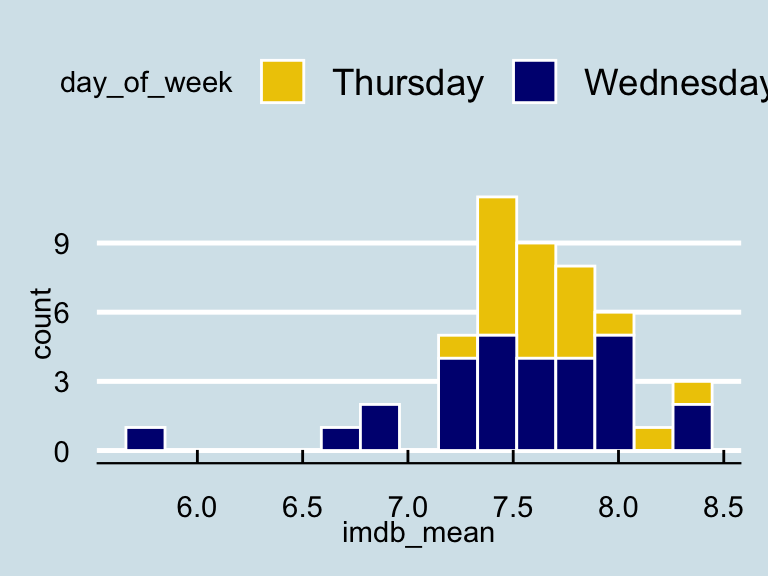
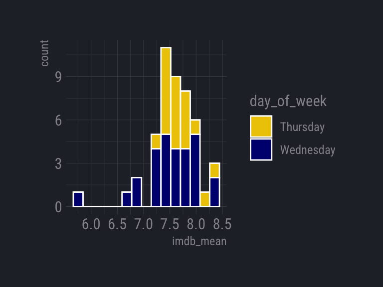
Prepackaged themes
ggplot2 themes
theme_grey()theme_bw()theme_linedraw()theme_light()theme_dark()theme_minimal()theme_classic()theme_void()theme_test()
ggthemes themes
theme_clean()theme_economist()theme_excel()theme_fivethirtyeight()theme_gdocs()theme_solarized()theme_stata()theme_tufte()theme_wsj()- And more!
Using a prepackaged theme
Try it
Apply theme_light() to the histogram
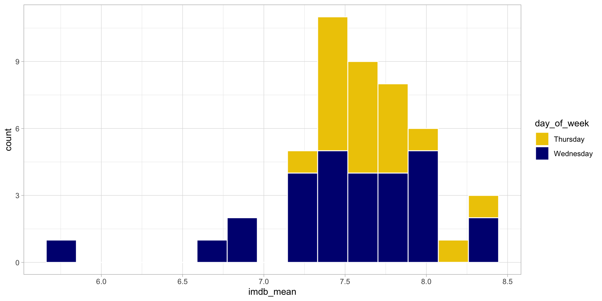
00:30
Even more customizations
- Move legend
- Clean up labels and title
- Get rid of .5’s in x-axis
- Annotations
?theme
theme(line, rect, text, title, aspect.ratio, axis.title, axis.title.x,
axis.title.x.top, axis.title.x.bottom, axis.title.y, axis.title.y.left,
axis.title.y.right, axis.text, axis.text.x, axis.text.x.top,
axis.text.x.bottom, axis.text.y, axis.text.y.left, axis.text.y.right,
axis.ticks, axis.ticks.x, axis.ticks.x.top, axis.ticks.x.bottom,
axis.ticks.y, axis.ticks.y.left, axis.ticks.y.right, axis.ticks.length,
axis.line, axis.line.x, axis.line.x.top, axis.line.x.bottom, axis.line.y,
axis.line.y.left, axis.line.y.right, legend.background, legend.margin,
legend.spacing, legend.spacing.x, legend.spacing.y, legend.key,
legend.key.size, legend.key.height, legend.key.width, legend.text,
legend.text.align, legend.title, legend.title.align, legend.position,
legend.direction, legend.justification, legend.box, legend.box.just,
legend.box.margin, legend.box.background, legend.box.spacing,
panel.background, panel.border, panel.spacing, panel.spacing.x,
panel.spacing.y, panel.grid, panel.grid.major, panel.grid.minor,
panel.grid.major.x, panel.grid.major.y, panel.grid.minor.x,
panel.grid.minor.y, panel.ontop, plot.background, plot.title,
plot.subtitle, plot.caption, plot.tag, plot.tag.position, plot.margin,
strip.background, strip.background.x, strip.background.y,
strip.placement, strip.text, strip.text.x, strip.text.y,
strip.switch.pad.grid, strip.switch.pad.wrap, ..., complete = FALSE,
validate = TRUE)Move legend and make the background transparent
Clean up labels and title
ggplot(season_summary) +
geom_histogram(
aes(x = imdb_mean, fill = day_of_week),
bins = 15,
color = "white"
) +
scale_fill_manual(values = c("gold2", "navyblue")) +
theme_minimal() +
theme(
legend.position = c(.15, .85),
legend.background = element_blank()
) +
labs(
x = "Season Average IMDB Rating",
y = "",
fill = "",
title = "Survivor is better on Thursdays"
)Remove minor gridlines
ggplot(season_summary) +
geom_histogram(
aes(x = imdb_mean, fill = day_of_week),
bins = 15,
color = "white"
) +
scale_fill_manual(values = c("gold2", "navyblue")) +
theme_minimal() +
theme(
legend.position = c(.15, .85),
legend.background = element_blank(),
panel.grid.minor = element_blank()
) +
labs(
x = "Season Average IMDB Rating",
y = "",
fill = "",
title = "Survivor is better on Thursdays"
)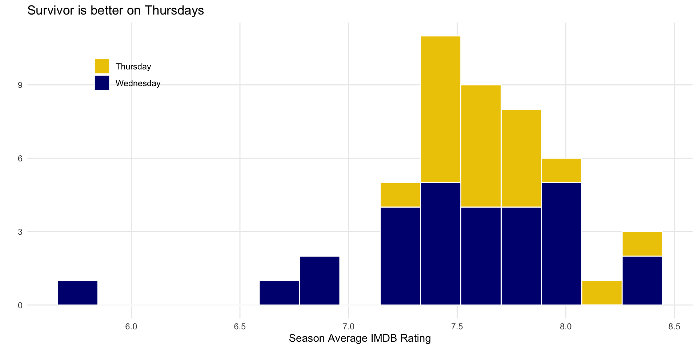
Get rid of .5’s
ggplot(season_summary) +
geom_histogram(
aes(x = imdb_mean, fill = day_of_week),
bins = 15,
color = "white"
) +
scale_fill_manual(values = c("gold2", "navyblue")) +
scale_x_continuous(breaks = c(6, 7, 8, 9)) +
theme_minimal() +
theme(
legend.position = c(.15, .85),
legend.background = element_blank(),
panel.grid.minor = element_blank()
) +
labs(
x = "Season Average IMDB Rating",
y = "",
fill = "",
title = "Survivor is better on Thursdays"
)Add an annotation
ggplot(season_summary) +
geom_histogram(
aes(x = imdb_mean, fill = day_of_week),
bins = 15,
color = "white"
) +
scale_fill_manual(values = c("gold2", "navyblue")) +
scale_x_continuous(breaks = c(6, 7, 8, 9)) +
theme_minimal() +
theme(
legend.position = c(.15, .85),
legend.background = element_blank(),
panel.grid.minor = element_blank()
) +
labs(
x = "Season Average IMDB Rating",
y = "",
fill = "",
title = "Survivor is better on Thursdays"
) +
annotate("text",
x = 6,
y = 3,
label = "Lowest ratings \n occur on \n Wednesdays",
col = "navyblue")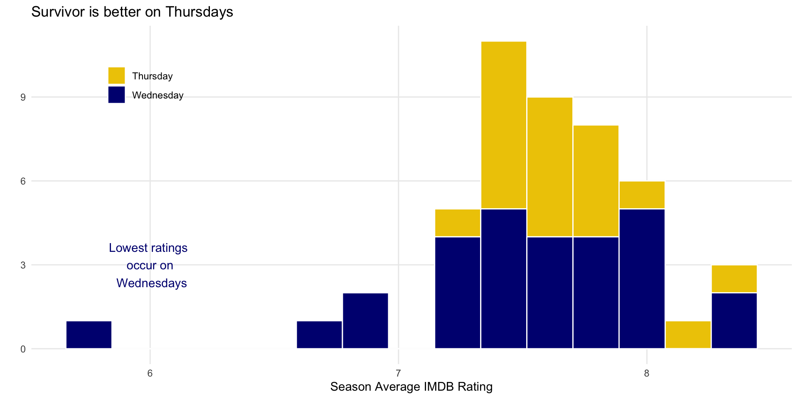
Plot Design
Which do you prefer?
Plot A:
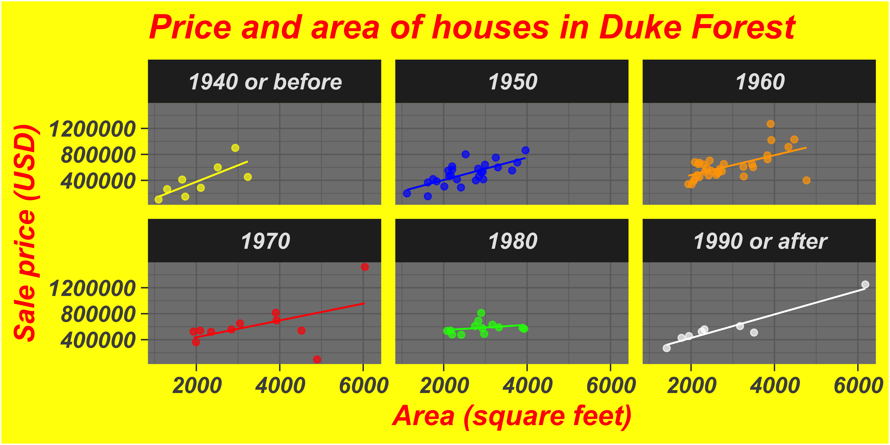
Which do you prefer?
Plot B:
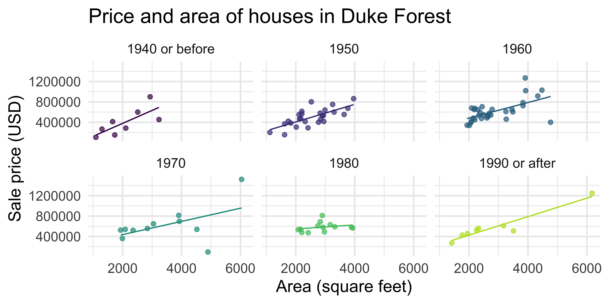
General guidelines
- Show the data, don’t distort it
- Choose the right plot
- Use color meaningfully and with restraint
- Tell a story
- Leave out non-story details
Show the data, don’t distort it

Show the data, don’t distort it
What a huge effect! 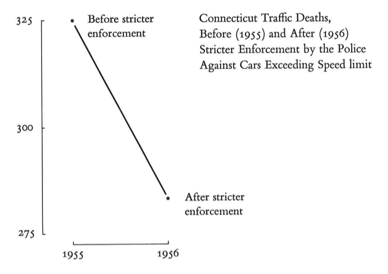
But it isn’t the whole story
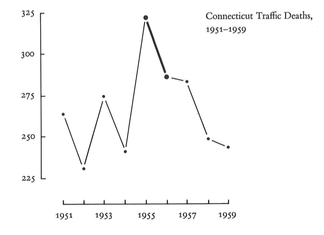
Choose the right plot
Wilke has good suggestions in chapters 5-16
Always stop and think about how easy it is to see the story
Try a few different options
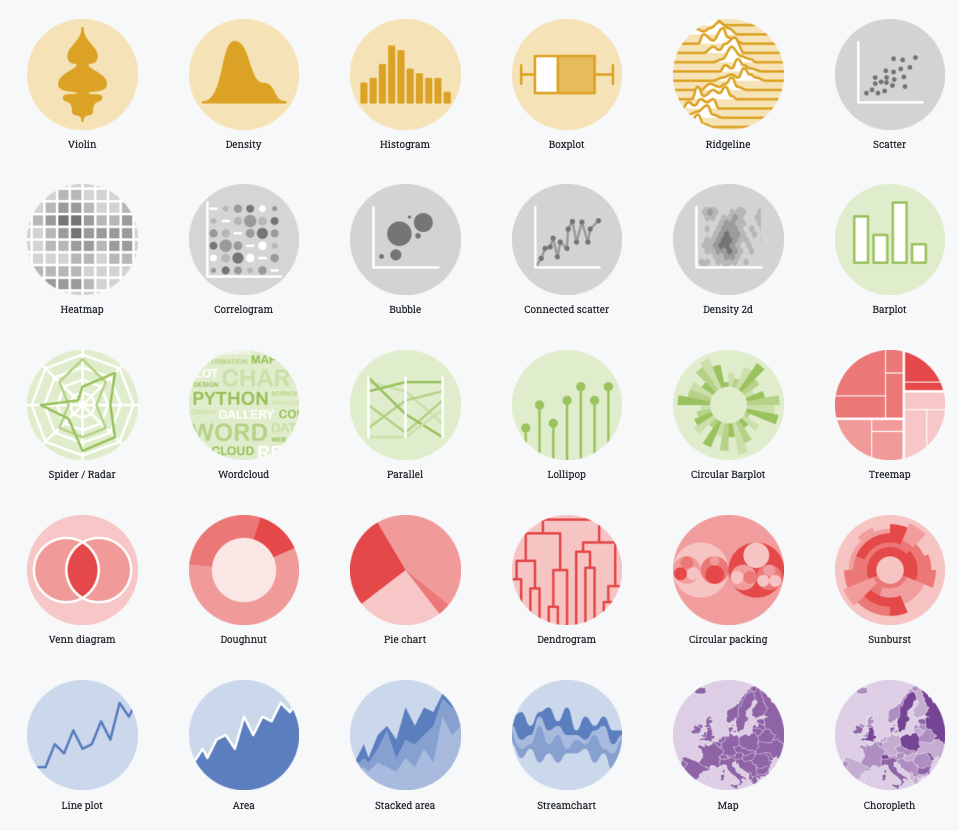
Example: Which slice is the biggest/smallest?

00:30

Use color meaningfully and with restraint
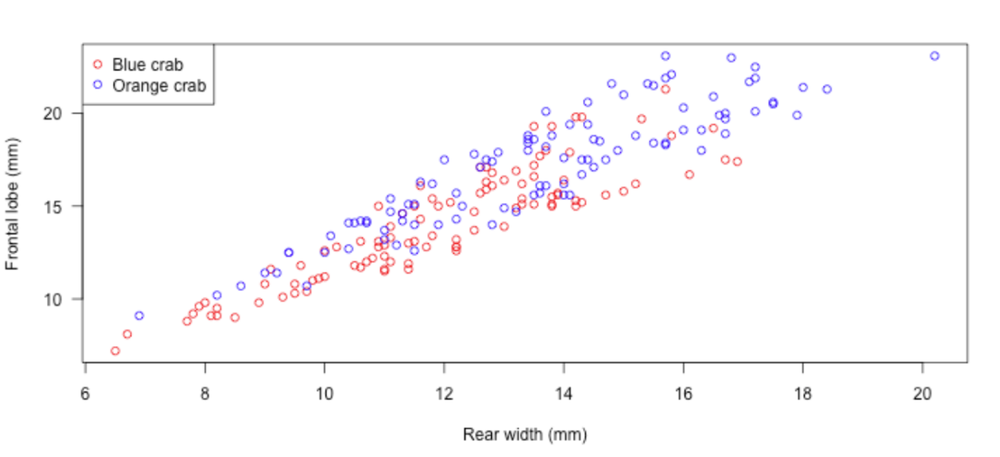
Use color meaningfully and with restraint
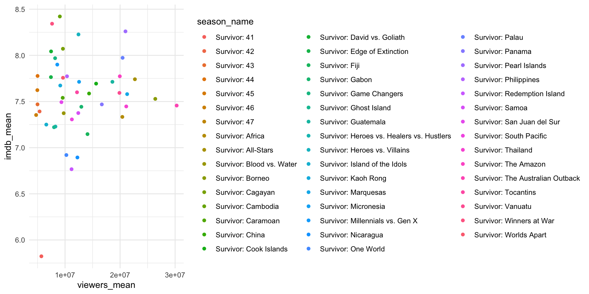
Tell a story
One way to do this is by highlighting the important parts

Leave out non-story details
Is this train schedule easy to read?
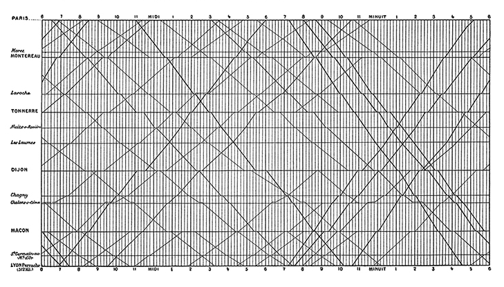
Avoid distractions
Does removing gridlines make it somewhat easier?
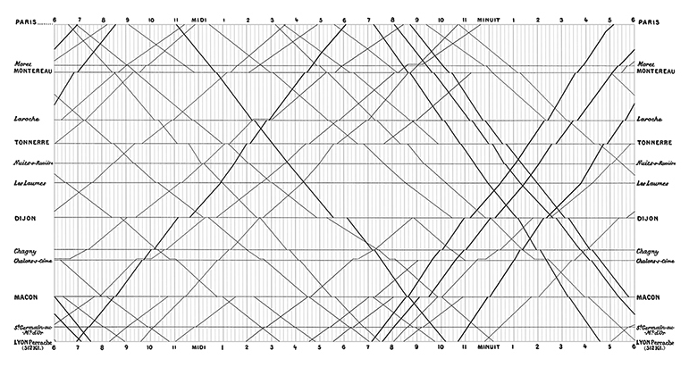
Data visualizations have an aura of objectivity
“We focus on four conventions which imbue visualisations with a sense of objectivity, transparency and facticity. These include: a) two-dimensional viewpoints; b) clean layouts; c) geometric shapes and lines; d) the inclusion of data sources.”
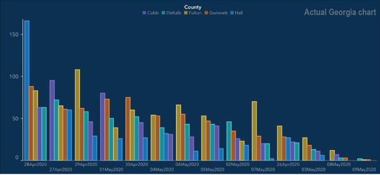
Good graphs can also break these guidelines
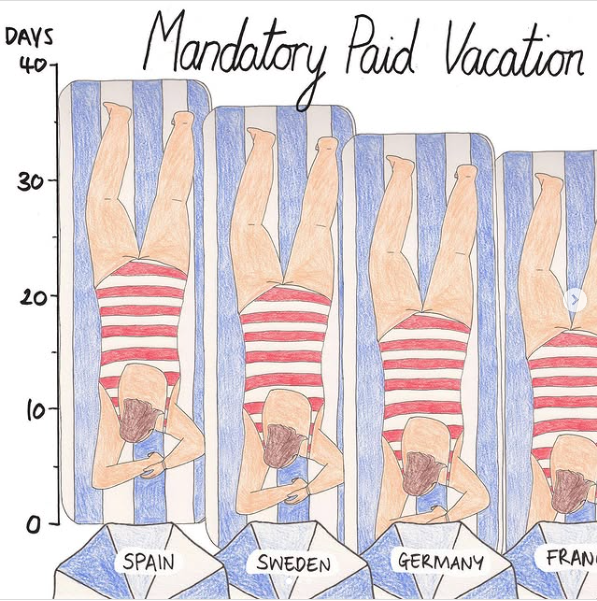
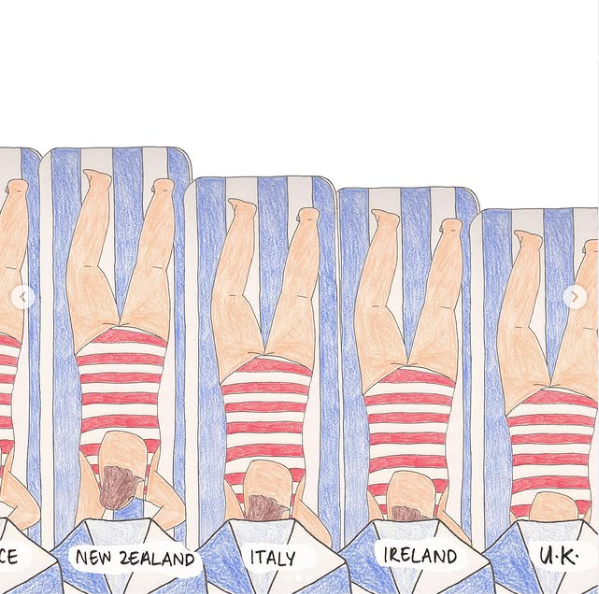
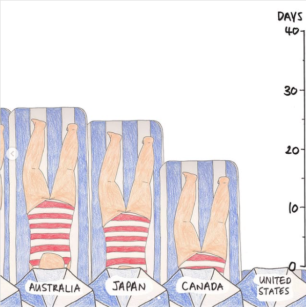
Good graphs can also break these guidelines
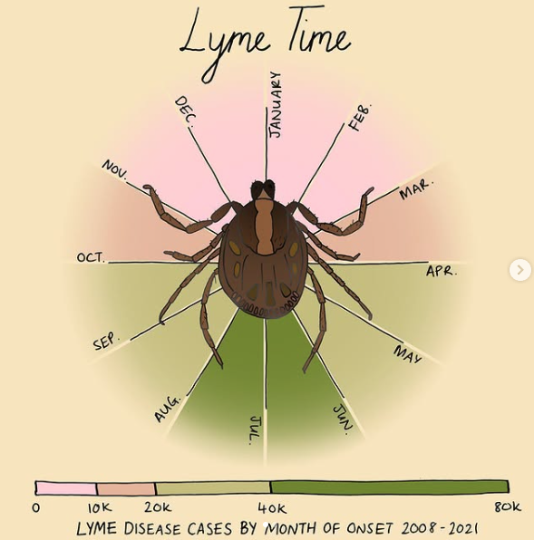
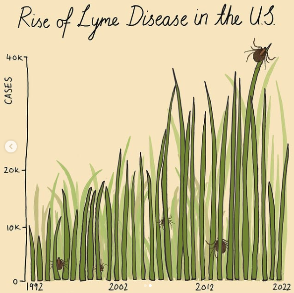
Your turn
Now that we have the toolkit to make customizations to our plots, and some “rules” for good graphs, let’s break them!
Choose a graph (the one from class today, one from last class, one from homework, etc.)
Make it ugly
- Change the
colorscale - Choose a complete theme
- Make at least 3 custom tweaks to the
themeoptions
Explain why it’s ugly (what “rules” are you breaking? what makes it an ineffective graph?)
Post to our slack #social channel when you’re done (you don’t have to post your explanation)